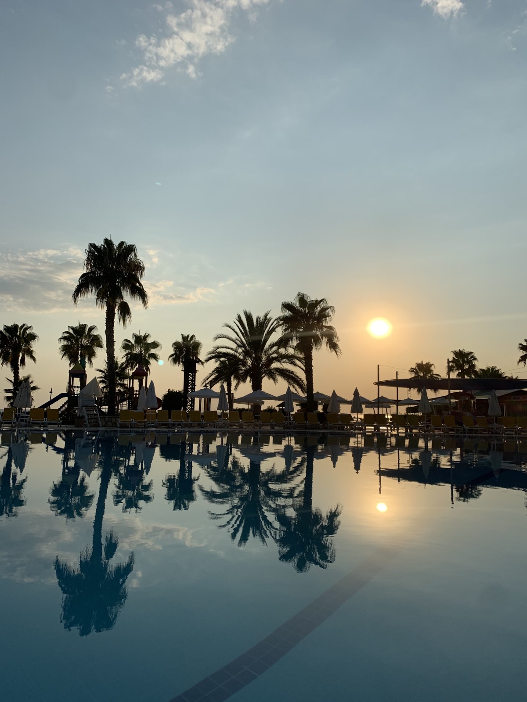
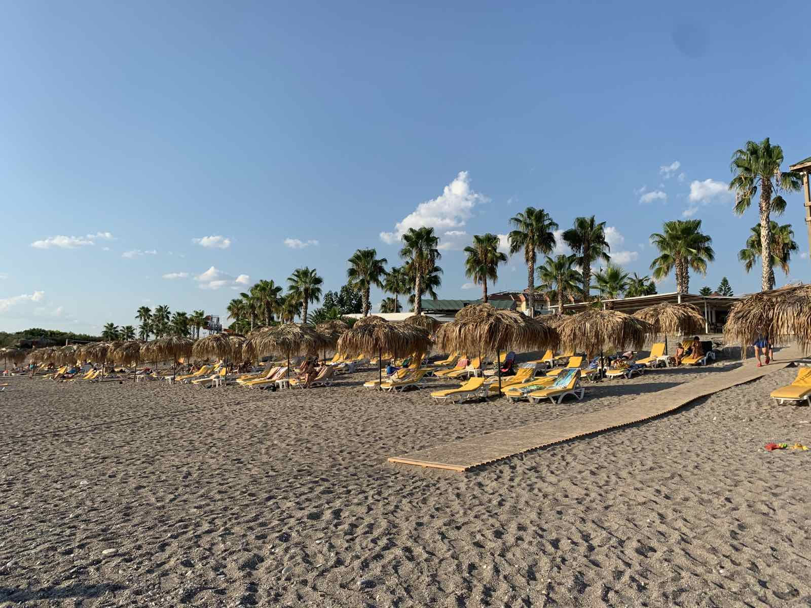
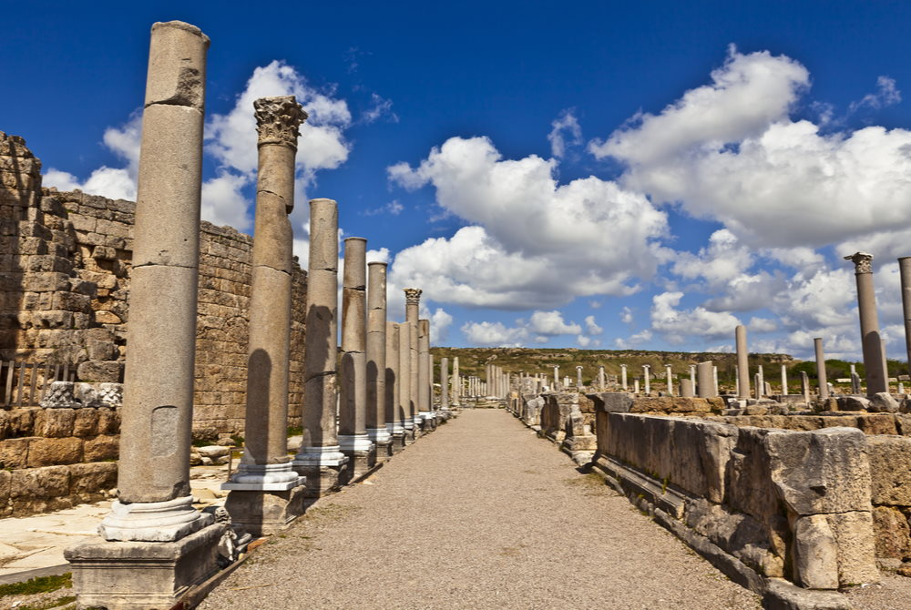
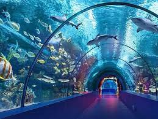
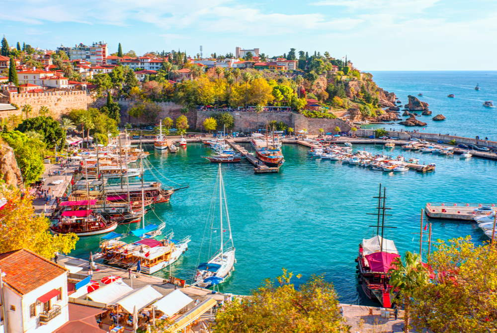
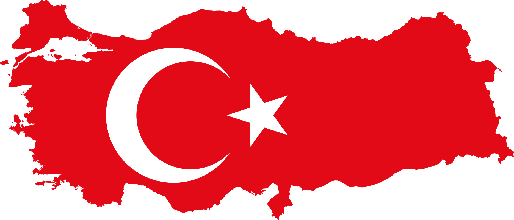

TURKEY
     The Antalya Region, now called the "Turkish Riviera" is the place where sea, sun, history and nature constitute a perfect harmony and which also includes the most beautiful and clearest coast along Mediterranean. There are so many things to visit in Antalya. I have visited the Antalya Aquarium which is the second largest aquarium in Europe and the 5th largest in the world. It was a wonderful experience to discover the magical world of underwater creatures while spending a great time with my family. Аlso another thing that I visited and stayed in my memory is the ancient city Perge. Perge is a major historical attraction in the region and is only 17 kms from Antalya. It was one of the largest and richest cities in ancient times and became the capital of the Pamphylia region.